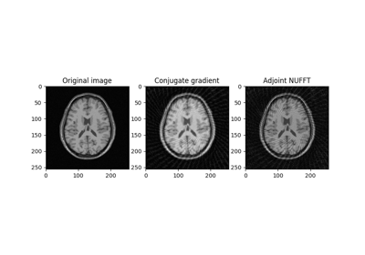
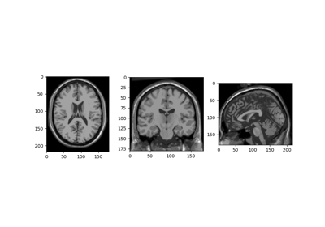
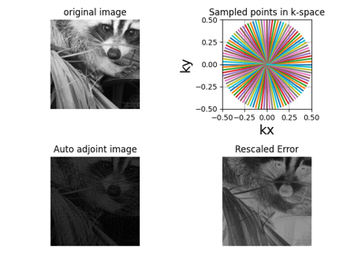
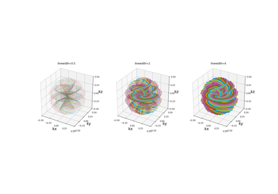
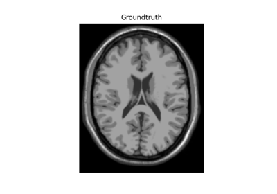
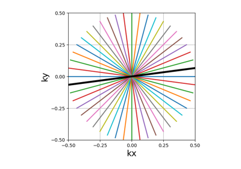
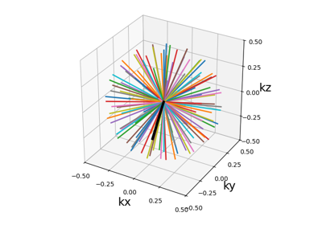
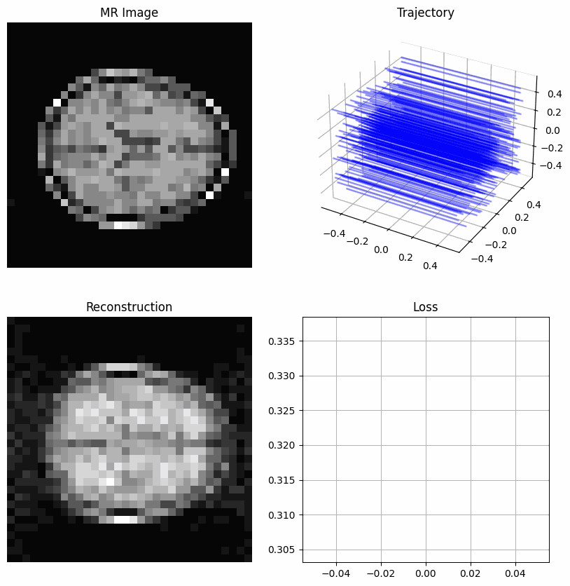

Examples#
This is a collection of examples showing how to use mri-nufft to perform MR image reconstruction.

sphx_glr_generated_autoexamples_example_cg.py
Example of using the Conjugate Gradient method.

Stacked NUFFT Operator

Minimal Example script

Trajectory display configuration
Trajectory display configuration

Off-resonance Corrected NUFFT Operator
Off-resonance Corrected NUFFT Operator


2D Trajectories



3D Trajectories

GPU Examples#
This is a collection of examples showing features of mri-nufft, particularly those that are GPU-accelerated.



Learn Straight line readout pattern
Learn Straight line readout pattern